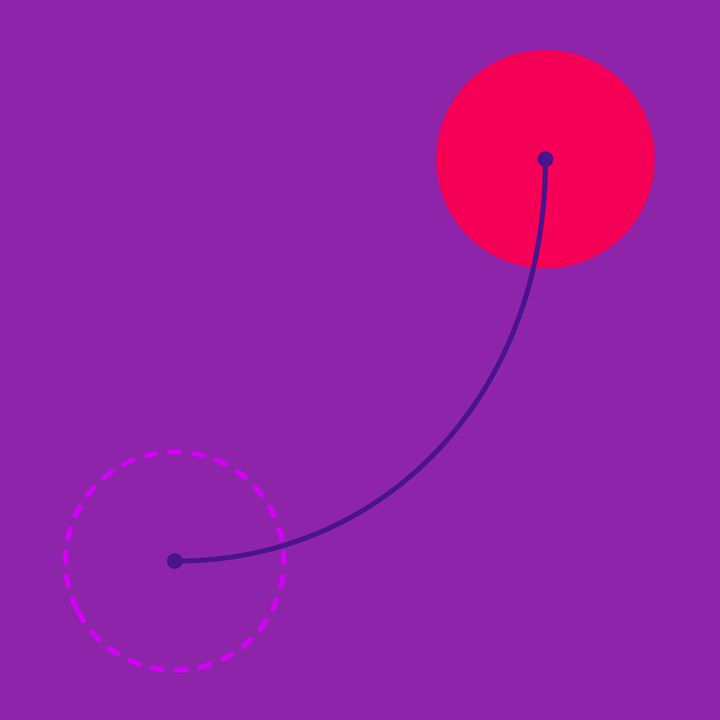

Material 中的运动遵循现实中的力学，比如重力。
屏幕上的移动
上升弧线
下降弧线
进出屏幕的移动
独立移动
关联移动

Material 中的运动遵循现实中的力学，比如重力。
上升弧线
下降弧线
独立移动
关联移动
元素在屏幕内两点之间移动时遵循一条自然、下凹的弧线。所有屏幕内的移动都遵循标准曲线。
现实世界中，上升中的物体需要外力来克服重力。Material 中的元素向上移动与现实类似，元素会从一个较慢的速度开始加速。
对
元素向斜上方移动时，刚开始坡度较缓，结束时坡度较陡。
错
不要在刚开始的时候使用陡峭的坡度。
现实中物体降落时会受到重力的作用而产生加速度。屏幕内的元素在下降时会受到较少的外力作用，刚开始会快速下降。
对
当元素向斜下方运动时，开始的曲线会比较陡峭，结束时会比较平坦。
错
不要在斜下方运动刚开始的时候使用平坦的曲线。
当元素朝着一个方向运动时（水平或者垂直）不需要遵循弧线轨迹。这种移动非常简单，而且速度可能会稍快一些。
对
单方向运动时使用直线轨迹。
错
单向运动时使用弧线会显得很不自然。
元素进出屏幕时的运动也是单方向的。
对
直线进入屏幕可以很清楚的感知到入口的位置。
错
不要在脱离屏幕的运动中使用弧线，这会让入口显得复杂。
元素进入或者退出屏幕时完全独立移动，不会对屏幕内的其他内容产生影响。
对
当元素进入屏幕并且对周围的其他元素没有影响时，应当使用减速曲线。在手机上，这个行为转换通常会持续 225ms。而当元素永久性的离开屏幕时，应当使用加速曲线。在手机上，这个行为转换通常会持续 195ms。
错
不要在以上两种情况中使用标准曲线。对入场来说，缓慢的加速是没有必要的，因为用户的焦点需要集中在元素最终停下来的地方。对于退场，缓慢的减速同样是没有必要，因为元素最终是要消失的。
当元素暂时性的离开屏幕时会使用sharp curve，因为元素需要再次返回屏幕，因此在屏幕之外的停留点不会太远。
对
当元素暂时性的离开屏幕时应当使用 sharp curve，因为元素会再次返回离开的地方。当元素返回时，使用减速曲线。在手机上，这个行为转换通常持续 300ms。
错
当元素永久性的离开屏幕时才使用加速曲线，否则当元素返回时无法回到原来的位置。而当元素返回时，应当使用减速曲线。
进入屏幕的元素如果对屏幕内的其他元素会产生影响，需要使用平滑的缓动曲线，这样才能降低混乱，避免视觉干扰和戏剧性的移动。
对于新进入的元素和屏幕内已有的元素，都使用标准曲线。相对于独立运动的元素，标准曲线使用的转换时间会稍久一些。
对
当屏幕内的浮动按钮被入场的卡片影响时，使用标准曲线可以让两个元素保持平滑的开始和结束。在手机上，这个行为转换通常持续 300ms。
错
在向上和向下移动时使用减速和加速曲线会让屏幕内浮动操作按钮的移动显得特别唐突。整个移动过程显得非常的粗糙且混乱。